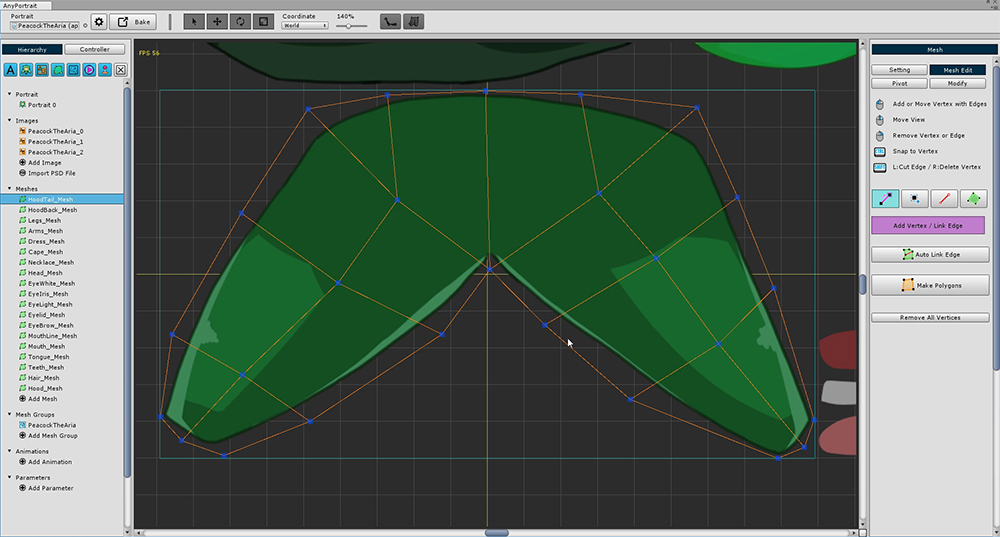

AnyPortrait > 시작하기 > 2.2. 본 애니메이션을 위해 메시 수정하기
2.2. 본 애니메이션을 위해 메시 수정하기
1.0.0

PSD 파일을 열어서 메시 그룹을 만들게 되면 메시, 메시 그룹이 자동으로 생성되는 것은 매우 편리하지만,
메시를 열어보면 단순한 사각형 메시로 구성되어 있는 것을 볼 수 있습니다.
단순히 이미지 조각을 "꼭두각시"처럼 움직일 것이라면 이 상태로도 충분합니다만,
이 튜토리얼에서는 본 애니메이션을 위해서 메시를 정교하게 만들 필요가 있습니다.

사각형 메시를 삭제하고 다시 버텍스를 추가하기 위해서 (1) Mesh Edit 메뉴에 들어갑니다.
(2) Remove All Vertices 버튼을 눌러서 모든 버텍스를 삭제합니다.

버텍스를 제거하고 나면 이전에는 볼 수 없었던 연한 하늘색의 사각형이 나타나는 것을 볼 수 있습니다.
이 사각형은 해당 레이어 이미지의 크기를 의미합니다.
이 영역 내에서 버텍스를 생성하면 다른 레이어의 이미지 영역에 침범하지 않고 만들 수 있습니다.
(필요한 경우 조금 넘어가는 것은 상관 없지만 주의를 요합니다.)

본을 넣어서 애니메이션이 되는 부분을 중심으로 버텍스를 조밀하게 생성해줍니다.
본에 의해 접히는 부분은 버텍스가 많을 수록 부드럽게 나타납니다.

이 튜토리얼에서 본 애니메이션이 적용되는 메시들입니다.
위 메시 형태를 참고하여 만들어봅시다.
- 눈 모양 메시들은 이 튜토리얼에서 애니메이션을 넣지 않으므로 생략해도 됩니다.
- 위 형태 그대로 만들 필요는 없습니다. 팔, 다리, 몸 위주로 관절이 접히는 부분을 잘 생각하여 만드시면 됩니다.